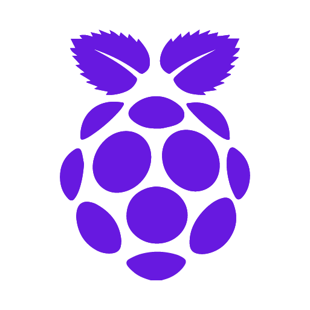

Nodes
Wallets
Cryptocurrencies
Programming
Projects
Quadrans Foundation
On this page
How-to
Installation
Management
Troubleshooting
Edit this page
Nodes
¶
How-to
¶
Linux x86-64
How-to
Windows
How-to

Linux Raspberry Pi
How-to
Linux Orange Pi
How-to
macOS (Darwin)
How-to
Installation
¶
Install Quadrans on Linux x86-64
Install Quadrans on Raspberry Pi
Install Quadrans on Orange Pi
Install Quadrans on Windows
Install Quadrans on macOS (darwin)
Management
¶
Update your manually configured Linux Quadrans node
Command Line Options
Checking the status of your Quadrans node
Status.py tool
Node paths and folders
How to open RPC/WS to external connections
How to setup your node for Testnet
Troubleshooting
¶
Error : invalid merkle root